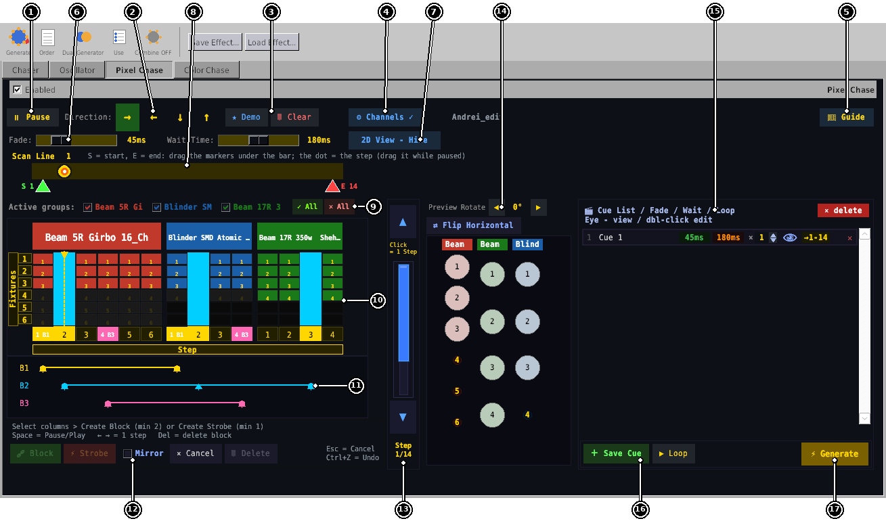

For: Full
Pixel Chase is a tab of the Effect Generator. It makes dimmer and strobe chases that run across the fixtures of several groups, like a running light: you draw on a matrix which fixture is on in which step, and the preview plays it - on the output too, live. Generate writes it as a light sequence into the Library. The groups are those of the Patch.
The Guide button opens a short guide with all of this, inside the program.

Andrei_edit after Demo: three groups, three blocks (B1, B2, B3), one cue saved.
| 1 | Pause / Play - stops or starts the preview (Space). Paused, the step shown stays on the output. |
| 2 | Direction - how the scan line goes over the matrix: left to right, right to left, top to bottom, bottom to top. |
| 3 | Demo fills the matrix with an example; Clear empties it (Ctrl+Z takes it back). |
| 4 | Channels - the table of the Dimmer and Shutter channels of each group (below). A blinking ! means something is missing there. |
| 5 | Guide - the quick guide. |
| 6 | Fade / Wait Time - the fade and the hold of each step. |
| 7 | 2D View - Hide / Unhide - leaves the preview out, so the cue list gets more room. |
| 8 | Scan Line - the step that plays (the dot - drag it while paused). S and E under the bar: where the chase starts and ends (drag them). |
| 9 | Active groups - which groups take part. ✓ All / ✕ All tick or untick every one. A hidden group keeps its data and is not written. |
| 10 | The matrix: one block of columns for each group, one row for each fixture of it. A lit cell = that fixture is on in that step. |
| 11 | The blocks (B1, B2 ...) and strobes (S1 ...): columns that light together; click a line to select it, Del deletes it. |
| 12 | Block, Strobe, Mirror, Cancel, Delete - the buttons for the columns selected (below). |
| 13 | The step bar: ▲ / ▼ one step back or forward; the step shown under it (1/14). |
| 14 | The preview: each fixture as a circle that lights as on the output. ◀ ▶ turn it, Flip Horizontal mirrors it - only the picture, not the chase. |
| 15 | The Cue List: the cues saved, each with its Fade, Wait, how many times it plays (× 1) and its range (→1-14). The eye: click = view it, double-click = edit it. ✕ deletes it. |
| 16 | Save Cue saves what the matrix shows as a new cue; Loop plays all the cues in order, as Generate will write them. |
| 17 | Generate - asks a name and writes the light sequence into the Library: exactly what the preview shows, every cue as many times as it is set to. |
| click | A cell on or off. |
| drag | Paints across the cells. |
| right-click | A cell off. |
| Ctrl+click / Shift+drag | Selects one cell, or several at once - then Strobe makes them strobe (an S on the cell). |
| click a number | Under the matrix: selects that column. |
| Block | With 2 or more columns selected: they light together, as one step. |
| Strobe | With 1 or more columns selected: the shutter strobes on those columns. |
| Mirror | Ticked: what you draw goes on the mirrored fixture too (the first and the last, the second and the one before the last ...). |
| double-click a header | The whole group as one column (MERGED), and back. |
| drag a header | Changes the order of the groups. |
| Space | Pause / Play. |
| ← → | One step (it pauses first). |
| Del | Deletes the selected block. |
| Esc | Cancels the selection. |
| Ctrl+Z | Undo - painting, blocks, Clear, a deleted cue (50 steps back). |
For each group the program finds the Dimmer and the Shutter channel in its .lfi2 profile, with the shutter values for open and strobe. When one cannot be found, the button blinks with a !: open the table and choose them. What you choose is remembered for that profile, in the settings of the program.
Save Effect... / Load Effect... on the toolbar keep the whole page in an effect file. With Combine ON Generate joins it with the other tabs of the Effect Generator. Untick Enabled in the header and the page goes grey: nothing of it is sent to the output.